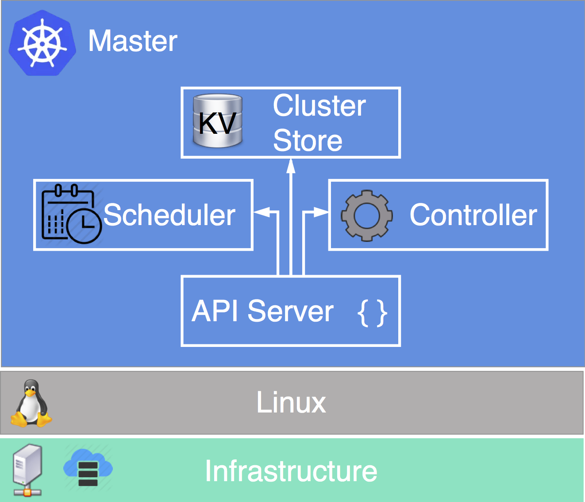
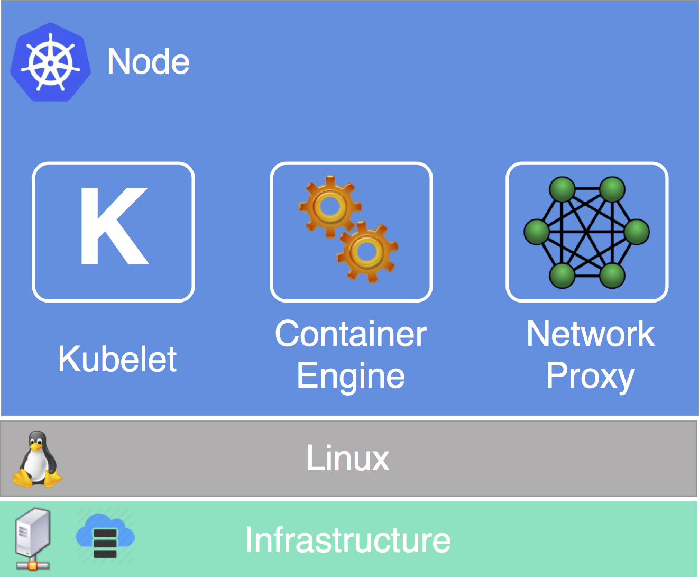
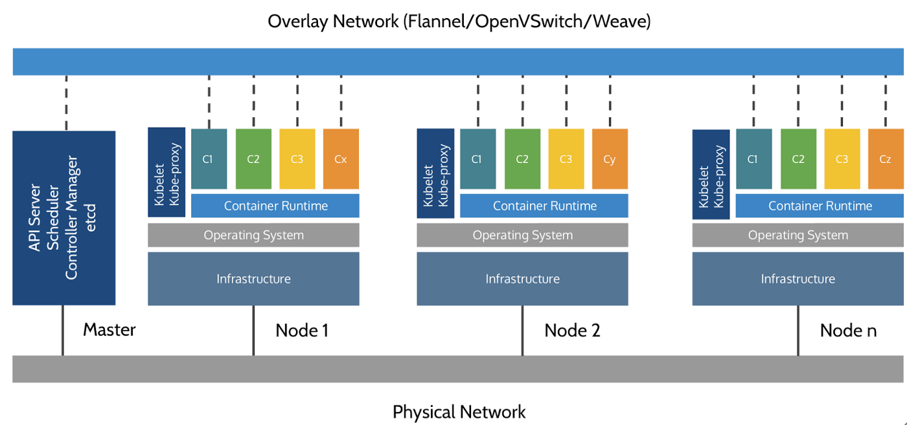

Introduction to Kubernetes
Discussion: Any App, Anywhere?
Containers are portable. What does this imply about the best ways to manage a containerized data center?
Learning Objectives
By the end of this module, learners will be able to
- Understand the components and roles of Kubernetes masters and nodes
- Identify and explain the core Kubernetes objects (Pod, ReplicaSet, Deployment, Service, Volumes)
- Provision configuration via configMaps and secrets
- Explore the Kubernetes networking model
Orchestrator Goals
Top-line goal: operate a datacenter like a pool of compute resources (not individual machines). This requires
- Add / remove compute resources securely and easily
- Schedule containers across the cluster transparently
- Streamline container-to-container communication (service discovery, load balancing and routing)
Pets Versus Livestock
- Kubernetes reschedules exited containers automatically
- When a container becomes unhealthy, kill it and get a new one.
Kubernetes Master
Important Components
- API Server: Frontend into Kubernetes control plane
- Cluster Store: Config and state of cluster
- Controller Manager: Assert desired state
- Scheduler: Assigns workload to nodes

Kubernetes Node
- Kubelet: Kubernetes Agent
- Container Engine: Host Containers
- Network Proxy: Networking & Load Balancing

Architecture

 Instructor Demo: Kubernetes Basics
Instructor Demo: Kubernetes Basics
See the demo
In the Exercises book.
Exercise: Installing Kubernetes
Work through
in the Exercises book.
Further Reading